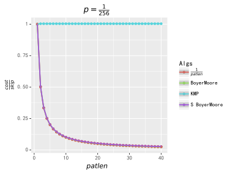
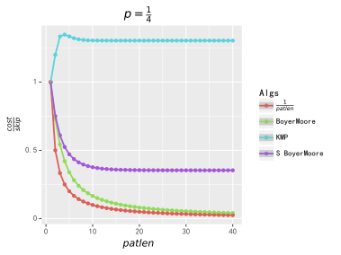

Bm
本章节内容需要以 《前缀函数与 KMP 算法》 作为前置章节。
之前的 KMP 算法将前缀匹配的信息用到了极致，
而 BM 算法背后的基本思想是通过后缀匹配获得比前缀匹配更多的信息来实现更快的字符跳转。
基础介绍¶
想象一下，如果我们的的模式字符串 pat，被放在文本字符串 string 的左手起头部，使它们的第一个字符对齐。
在这里做定义，往后不赘述：
pat 的长度为 patlen，特别地对于从 0 开始的串来说，规定 patlastpos=patlen-1 为 pat 串最后一个字符的位置；
string 的长度 stringlen，stringlastpos = stringlen-1。
假如我们知道了 string 的第 patlen 个字符 char（与 pat 的最后一个字符对齐）考虑我们能得到什么信息：
观察 1：
如果我们知道 char 这个字符不在 pat 中，我们就不用考虑 pat 从 string 的第 1 个、第 2 个……第 patlen 个字符起出现的情况，，而可以直接将 pat 向下滑动 patlen 个字符。
观察 2：
更一般地，如果出现在 pat 最末尾（也就是最右边）的那一个 char 字符的位置是离末尾端差了 delta_1 个字符，
那么就可以不用匹配，直接将 pat 向后滑动 delta_1 个字符：如果滑动距离少于 delta_1，那么仅就 char 这个字符就无法被匹配，当然模式字符串 pat 也就不会被匹配。
因此除非 char 字符可以和 pat 末尾的那个字符匹配，否则 string 要跳过 delta_1 个字符（相当于 pat 向后滑动了 delta_1 个字符）。并且我们可以得到一个计算 delta_1 的函数 delta_1(char)：
注意：显然这个表只需计算到 patlastpos-1 的位置
现在假设 char 和 pat 最后一个字符匹配到了，那我们就看看 char 前一个字符和 pat 的倒数第二个字符是否匹配：
如果是，就继续回退直到整个模式串 pat 完成匹配（这时我们就在 string 上成功得到了一个 pat 的匹配）；
或者，我们也可能会在匹配完 pat 的倒数第 m 个字符后，在倒数第 m+1 个字符上失配，这时我们就希望把 pat 向后滑动到下一个可能会实现匹配的位置，当然我们希望滑动得越远越好。
观察 3(a)：
在 观察 2 中提到，当匹配完 pat 的倒数 m 个字符后，如果在倒数第 m+1 个字符失配，为了使得 string 中的失配字符与 pat 上对应字符对齐，
需要把 pat 向后滑动 k 个字符，也就是说我们应该把注意力看向之后的 k+m 个字符（也就是看向 pat 滑动 k 之后，末段与 string 对齐的那个字符）。
而 k=delta_1-m，
所以我们的注意力应该沿着 string 向后跳 delta_1-m+m = delta_1 个字符。
然而，我们有机会跳过更多的字符，请继续看下去。
观察 3(b)：
如果我们知道 string 接下来的 m 个字符和 pat 的最后 m 个字符匹配，假设这个子串为 subpat，
我们还知道在 string 失配字符 char 后面是与 subpat 相匹配的子串，而假如 pat 对应失配字符前面存在 subpat，我们可以将 pat 向下滑动一段距离，
使得失配字符 char 在 pat 上对应的字符前面出现的 subpat（合理重现，plausible reoccurrence，以下也简称 pr）与 string 的 subpat 对齐。如果 pat 上有多个 subpat，按照从右到左的后缀匹配顺序，取第一个（rightmost plausible reoccurrence，以下也简称 rpr）。
假设此时 pat 向下滑动的 k 个字符（也即 pat 末尾端的 subpat 与其最右边的合理重现的距离），这样我们的注意力应该沿着 string 向后滑动 k+m 个字符，这段距离我们称之为 delta_2(j)：
假定 rpr(j) 为 subpat=pat[j+1\dots patlastpos] 在 pat[j] 上失配时的最右边合理重现的位置，rpr(j) < j（这里只给出简单定义，在下文的算法设计章节里会有更精确的讨论），那么显然 k=j-rpr(j),\ m=patlastpos-j。
所以有：
于是我们在失配时，可以把把 string 上的注意力往后跳过 \max(delta_1,delta_2) 个字符
实例说明：¶
箭头指向失配字符 char：
\texttt{F} 没有出现 pat 中，根据 观察 1，pat 直接向下移动 patlen 个字符，也就是 7 个字符：
根据 观察 2，我们需要将 pat 向下移动 4 个字符使得短横线字符对齐：
现在char:\texttt{T} 匹配了，把 string 上的指针左移一步继续匹配：
根据 观察 3(a)，\texttt{L} 失配，因为 \texttt{L} 不在 pat 中，所以 pat 向下移动 k=delta_1-m=7-1=6 个字符，而 string 上指针向下移动 delta_1=7 个字符：
这时 char 又一次匹配到了 pat 的最后一个字符 \texttt{T}，string 上的指针向左匹配，匹配到了 \texttt{A}，继续向左匹配，发现在字符 \texttt{-} 失配：
显然直观上看，此时根据 观察 3(b)，将 pat 向下移动 k=5 个字符，使得后缀 \texttt{AT} 对齐，这种滑动可以获得 string 指针最大的滑动距离，此时 delta_2=k+patlastpos-j=5+6-4=7，即 string 上指针向下滑动 7 个字符。
而从形式化逻辑看，此时，delta_1=7-1-2=4,\ delta_2=7, \max(delta_1,delta_2)= 7， 这样从形式逻辑上支持了进行 观察 3(b) 的跳转：
现在我们发现了 pat 上每一个字符都和 string 上对应的字符相等，我们在 string 上找到了一个 pat 的匹配。而我们只花费了 14 次对 string 的引用，其中 7 次是完成一个成功的匹配所必需的比较次数（patlen=7），另外 7 次让我们跳过了 22 个字符，Amazing（浮夸口气）！
算法设计¶
最初的匹配算法¶
现在看这样一个利用 delta_1 和 delta_2 进行字符串匹配的算法：
如果上面的算法 \textbf{return}\ false，表明 pat 不在 string 中；如果返回一个数字，表示 pat 在 string 左起第一次出现的位置。
然后让我们更精细地描述下计算 delta_2，所依靠的 rpr(j) 函数。
根据前文定义，rpr(j) 表示在 pat(j) 失配时，子串 subpat=pat[j+1\dots patlastpos] 在 pat[j] 最右边合理重现的位置。
也就是说需要找到一个最好的 k, 使得 pat[k\dots k+patlastpos-j-1]=pat[j+1\dots patlastpos]，另外要考虑两种特殊情况：
- 当 k<0 时，相当于在 pat 前面补充了一段虚拟的前缀，实际上也符合 delta_2 跳转的原理。
- 当 k>0 时，如果 pat[k-1]=pat[j]，则这个 pat[k\dots k+patlastpos-j-1] 不能作为 subpat 的合理重现。 原因是 pat[j] 本身是失配字符，所以 pat 向下滑动 k 个字符后，在后缀匹配过程中仍然会在 pat[k-1] 处失配。
还要注意两个限制条件：
- k < j。因为当 k=j 时，有 pat[k]=pat[j]，在 pat[j] 上失配的字符也会在 pat[k] 上失配。
- 考虑到 delta_2(patlastpos)= 0，所以规定 rpr(patlastpos) = patlastpos。
由于理解 rpr(j) 是实现 BoyerMoore 算法的核心，所以我们使用如下两个例子进行详细说明：
对于 rpr(0)，subpat 为 \texttt{BCXXXABC}，在 pat[0] 之前的最右边合理重现只能是 \texttt{[(BCXXX)ABC]XXXABC}，也就是最右边合理重现位置为 -5，即 rpr(j)=-5；
对于 rpr(1)，subpat 为 \texttt{CXXXABC}，在 pat[1] 之前的最右边的合理重现是 \texttt{[(CXXX)ABC]XXXABC}，所以 rpr(j)=-4；
对于 rpr(2)，subpat 为 \texttt{XXXABC}，在 pat[2] 之前的最右边的合理重现是 \texttt{[(XXX)ABC]XXXABC}，所以 rpr(j)=-3；
对于 rpr(3)，subpat 为 \texttt{XXABC}，在 pat[3] 之前的最右边的合理重现是 \texttt{[(XX)ABC]XXXABC}，所以 rpr(j)=-2；
对于 rpr(4)，subpat 为 \texttt{XABC}，在 pat[4] 之前的最右边的合理重现是 \texttt{[(X)ABC]XXXABC}，所以 rpr(j)=-1；
对于 rpr(5)，subpat 为 \texttt{ABC}，在 pat[5] 之前的最右边的合理重现是 \texttt{[ABC]XXXABC}，所以 rpr(j)=0；
对于 rpr(6)，subpat 为 \texttt{BC}，又因为 string[0]=string[6]，即 string[0] 等于失配字符 string[6]，所以 string[0\dots 2] 并不是符合条件的 subpat 的合理重现，所以在最右边的合理重现是 \texttt{[(BC)]ABCXXXABC}，所以 rpr(j)=-2；
对于 rpr(7)，subpat 为 \texttt{C}，同理又因为 string[7]=string[1]，所以 string[1\dots 2] 并不是符合条件的 subpat 的合理重现，在最右边的合理重现是 \texttt{[(C)]ABCXXXABC}，所以 rpr(j)=-1；
对于 rpr(8)，根据 delta_2 定义，rpr(patlastpos)=patlastpos，得到 rpr(8)=8。
现在再看一下另一个例子：
对于 rpr(0)，subpat 为 \texttt{BYXCDEYX}，在 pat[0] 之前的最右边合理重现只能是 \texttt{[(BYXCDEYX)]ABYXCDEYX}，也就是最右边合理重现位置为 -8，即 rpr(j)=-8；
对于 rpr(1)，subpat 为 \texttt{YXCDEYX}，在 pat[1] 之前的最右边合理重现只能是 \texttt{[(YXCDEYX)]ABYXCDEYX}，rpr(j)=-7；
对于 rpr(2)，subpat 为 \texttt{XCDEYX}，在 pat[2] 之前的最右边合理重现只能是 \texttt{[(XCDEYX)]ABYXCDEYX}，rpr(j)=-6；
对于 rpr(3)，subpat 为 \texttt{CDEYX}，在 pat[3] 之前的最右边合理重现只能是 \texttt{[(CDEYX)]ABYXCDEYX}，rpr(j)=-5；
对于 rpr(4)，subpat 为 \texttt{DEYX}，在 pat[4] 之前的最右边合理重现只能是 \texttt{[(DEYX)]ABYXCDEYX}，rpr(j)=-4；
对于 rpr(5)，subpat 为 \texttt{EYX}，在 pat[5] 之前的最右边合理重现只能是 \texttt{[(EYX)]ABYXCDEYX}，rpr(j)=-3；
对于 rpr(6)，subpat 为 \texttt{YX}，因为 string[2\dots 3]=string[7\dots 8] 并且有 string[6]\neq string[1]，所以在 pat[6] 之前的最右边的合理重现是 \texttt{AB[YX]CDEYX}，rpr(j)=2；
对于 rpr(7)，subpat 为 \texttt{X}，虽然 string[3]=string[8] 但是因为 string[2] = string[7]，所以在 pat[7] 之前的最右边的合理重现是 \texttt{[X]ABYXCDEYX}，rpr(j)=-1;
对于 rpr(8)，根据 delta_2 定义，rpr(patlastpos)=patlastpos，得到 rpr(8)=8。
对匹配算法的一个改进¶
最后，实践过程中考虑到搜索过程中估计有 80% 的时间用在了基于 观察 1 的跳转上，也就是 string[i] 和 pat[patlastpos] 不匹配，然后跳越整个 patlen 进行下一次匹配的过程。
于是，可以为此进行特别的优化：
我们定义一个 delta0：
用 delta0 代替 delta_1，得到改进后的匹配算法：
其中 large 起到多重作用，一是类似后面介绍的 Horspool 算法进行快速的坏字符跳转，二是辅助检测字符串搜索是否完成。
经过改进，比起原算法，在做 观察 1 跳转时不必每次进行 delta_2 的多余计算，使得在通常字符集下搜索字符串的性能有了明显的提升。
delta_2 构建细节¶
历史细节¶
说起 delta_2 的实现，发表在 1977 年 10 月的Communications of the ACM上的在 Boyer、Moor 的论文1里只描述了这个静态表，并没有说明如何产生它。
而构造 delta_2 的具体实现的讨论出现在 1977 年 6 月 Knuth、Morris、Pratt 在SIAM Journal on Computing上正式联合发表的 KMP 算法的论文2里（这篇论文是个宝藏，除了 KMP，其中还提及了若干字符串搜索的算法构想和介绍，其中就包括了本文介绍的 BM 算法），听力来有点儿魔幻，嗯哼？这就不得不稍微介绍一点历史细节了：
-
1969 年夏天 Morris 为某个大型机编写文本编辑器时利用有限自动机的理论发明了等价于 KMP 算法的字符串匹配算法，而他的算法由于过于复杂，被不理解他算法的同事当做 bug 修改得一团糟，哈哈。
-
1970 年 KMP 中的“带头人”Knuth 在研究 Cook 的关于两路确定下推自动机（two-way deterministic pushdown automaton）的理论时受到启发，也独立发明了 KMP 算法的雏形，并把它展示给他的同事 Pratt，Pratt 改进了算法的数据结构。
-
1974 年 Boyer、Moor 发现通过更快地跳过不可能匹配的文本能实现比 KMP 更快的字符串匹配，（Gosper 也独立地发现了这一点），而一个只有原始 delta_1 定义的匹配算法是 BM 算法的最原始版本。
-
1975 年 Boyer、Moor 提出了原始的 delta_2 表，而这个版本的 delta_2 表不仅不会对性能有所改善，还会在处理小字符表时拖累性能表现，而同年 MIT 人工智能实验室的 Kuipers 和我们熟悉的 Knuth 向他们提出了类似的关于 delta_2 的改进建议，于是 Boyer、Moor 在论文的下一次修改中提到了这个建议，并提出一个用二维表代替 delta_1 和 delta_2 的想法。
-
1976 年 1 月 Knuth 证明了关于 delta_2 的改进会得到更好的性能，于是 Boyer、Moor 两人又一次修改了论文，得到了现在版本的 delta_2 定义。同年 4 月，斯坦福的 Floyd 又发现了 Boyer、Moor 两人第一版本的公式中的严重的统计错误，并给出了现在版本的公式。
-
Standish 又为 Boyer、Moor 提供了现在的匹配算法的改进。
-
1977 年 6 月 Knuth、Morris、Pratt 正式联合发表了 KMP 算法的论文，其中在提及比 KMP 表现更好的算法中提出了 delta_2 的构建方式。（其中也感谢了 Boyer、Moor 对于证明线性定理（linearity theorem）提供的帮助）
这个 BM 算法的发展的故事，切实地向我们展示了团结、友谊、协作，以及谦虚好学不折不挠“在平凡中实现伟大”！😂😂😂
时间复杂度为 O(n^3) 的构建 delta_2 的朴素算法¶
在介绍 Knuth 的 delta_2 构建算法之前，根据定义，我们会有一个原始、简单但有时可能已经够用的朴素算法（除非你需要构建长度成百上千的 pat）：
- 对于
[0, patlen)区间的每一个位置i，根据subpat的长度确定其重现位置的区间，也就是[-subpatlen, i]； - 可能的重现位置按照从右到左进行逐字符比较，寻找符合 delta_2 要求的最右边 subpat 的重现位置；
- 最后别忘了令 delta_2(lastpos)= 0。
1 2 3 4 5 6 7 8 9 10 11 12 13 14 15 16 17 18 19 20 21 22 23 24 25 26 27 28 29 30 31 32 33 34 35 36 37 38 39 40 | |
特别地，对 Rust 语言特性进行必要地解释，下不赘述：
usize和isize是和内存指针同字节数的无符号整数和有符号整数，在 32 位机上相当于u32和i32，64 位机上相当于u64和i64。- 索引数组、向量、分片时使用
usize类型的数字（因为在做内存上的随机访问并且下标不能为负值），所以如果需要处理负值要用isize，而进行索引时又要用usize，这就看到使用as关键字进行二者之间的显式转换。 impl PartialEq只是用作泛型，可以同时支持Unicode编码的char和二进制的u8。
显见这是个时间复杂度为 O(n^3) 的暴力算法。
时间复杂度为 O(n) 的构建 delta_2 的高效算法¶
下面我们要介绍的是时间复杂度为 O(n)，但是需要额外 O(n) 空间复杂度的高效算法。
需要指出的是，虽然 1977 年 Knuth 提出了这个构建方法，然而他的原始版本的构建算法存在一个缺陷，实际上对于某些 pat 产生不出符合定义的 delta_2。
Rytter 在 1980 年SIAM Journal on Computing上发表的文章3对此提出了修正，但是 Rytter 的这篇文章在细节上有些令人疑惑的地方，包括不限于：
- 示例中奇怪的 delta_2 数值（不清楚他依据的 delta_2 是否和最终版 delta_2 定义有微妙的差别，但我实在不想因为这事儿继续考古了😱）
- 明显的在复述 Knuth 算法时的笔误、算法上错误的缩进（可能是文章录入时的问题？）
- 奇妙的变量命名（考虑到那个时代的标签：
goto语句、汇编语言、大型机，随性的变量命名也很合理）
总之就是你绝对不想看他的那个修正算法的具体实现，不过好在他在用文字描述的时候比用伪代码清晰多了呢，现在我们用更清晰的思路和代码结构整理这么一个
delta_2 的构建算法：
首先考虑到 delta_2 的定义比较复杂，我们按照 subpat 的重现位置进行分类，每一类进行单独处理，这是高效实现的关键思路。
按照重现位置由远到近，也就是偏移量由大到小，分成如下几类：
-
整个 subpat 重现位置完全在 pat 左边的，比如 \texttt{[(EYX)]ABYXCDEYX}，此时 delta_2(j) = patlastpos\times 2 - j；
-
subpat 的重现有一部分在 pat 左边，有一部分是 pat 头部，比如 \texttt{[(XX)ABC]XXXABC}，此时 patlastpos < delta_2(j) < patlastpos\times 2 - j； 我们把 subpat 完全在 pat 头部的的边际情况也归类在这里（当然根据实现也可以归类在下边），比如 \texttt{[ABC]XXXABC}，此时 patlastpos = delta_2(j)；
-
subpat 的重现完全在 pat 中，比如 \texttt{AB[YX]CDEYX}，此时 delta_2(j) < patlastpos。
现在来讨论如何高效地计算这三种情况：
第一种情况¶
这是最简单的情况，只需一次遍历并且可以顺便将 delta_2 初始化。
第二种情况¶
我们观察什么时候会出现 subpat 的重现一部分在 pat 左边，一部分是 pat 的头部的情况呢？应该是 subpat 的某个后缀和 pat 的某个前缀相等，
比如之前的例子：
delta_2(3) 的重现 \texttt{[(XX)ABC]XXXABC}，subpat \texttt{XXABC} 的后缀与 pat 前缀中，有相等的，是 \texttt{ABC}。
说到这个拗口的前缀后缀相等，此时看过之前《前缀函数与 KMP 算法》的小伙伴们可能已经有所悟了，
没错，实际上对第二种和第三种情况的计算的关键都离不开前缀函数的计算和和应用
那么只要 j 取值使得 subpat 包含这个相等的后缀，那么就可以得到第二种情况的 subpat 的重现，对于例子，我们只需要使得 j \leqslant 5，
而当 j = 5 时，就是 subpat 完全在 pat 头部的边际情况。
可以计算此时的 delta_2(j)：
设此时这对相等的前后缀长度为 \textit{prefixlen}，可知 subpatlen = patlastpos - j，那么在 pat 左边的部分长度是 subpatlen-\textit{prefixlen}，
而 rpr(j) = -(subpatlen-\textit{prefixlen})，所以得到 delta_2(j) = patlastpos - rpr(j) = patlastpos \times 2 - j - \textit{prefixlen}。
那么问题到这儿是不是结束了呢，并不是，因为可能会有多对相等的前缀和后缀，比如：
在 j\leq2 处有 \texttt{ABAABAA}，2< j \leq 5 处有 \texttt{ABAA}，在 5<j\leq8 处有 \texttt{A}
之前提到的 Knuth 算法的缺陷就是只考虑了最长的那一对的情况。
所以实际上我们要考虑所有 subpat 后缀与 pat 前缀相等的情况，其实也就是计算 pat 所有真后缀和真前缀相等的情况，然后按照长度从大到小，j 分区间计算
不同的 delta_2(j)。而如何得到 pat 所有相等的真前缀和真后缀长度呢？答案正是利用前缀函数和逆向运用计算前缀函数的状态转移方程：j^{(n)} = \pi[j^{(n-1)}-1]。
从 \pi[patlastpos] 开始作为最长一对的长度，然后通过逆向运行状态转移方程，得到下一个次长相等真前缀和真后缀的长度，直到这里我们就完成了第二种情况的 delta_2 的计算。
第三种情况¶
subpat 的重现不在别的地方，恰好就在 pat 中（不包括 pat 的头部）。
也就是按照从右到左的顺序，在 pat[0\dots patlastpos-1] 中寻找 subpat。
开启脑洞：既然是个字符串搜索的问题，那么当然可以用著名的 BM 算法本身解决，于是我们就得到了一个 BM 的递归实现的第三种情况，结束条件是 patlen \leqslant 2
而且根据 delta_2 的定义，找到的 subpat 的重现的下一个（也就是左边一个）字符和作为 pat 后缀的 subpat 的下一个字符不能一样。
这就很好地启发了我们（起码很好地启发了 Knuth）使用类似于计算前缀函数的过程计算第三种情况，只不过是左右反过来的前缀函数：
- 两个指针分别指向子串的左端点和子串最长公共前后缀的“前缀”位置，从右向左移动，在发现指向的两个字符相等时继续移动，此时相当于“前缀”变大；
- 当两个字符不相等时，之前相等的部分就满足了 delta_2 对重现的要求，并且回退指向“前缀”位置的指针直到构成新的字符相等或者出界。
同前缀函数一样，需要一个辅助数组，用于回退，可以使用之前计算第二种情况所生成的前缀数组的空间。
上述实现¶
1 2 3 4 5 6 7 8 9 10 11 12 13 14 15 16 17 18 19 20 21 22 23 24 25 26 27 28 29 30 31 32 33 34 35 36 37 38 39 40 41 42 43 44 45 46 47 48 49 50 51 52 53 54 55 56 57 58 59 60 61 62 63 | |
Galil 规则对多次匹配时最坏情况的改善¶
关于后缀匹配算法的多次匹配问题¶
之前的搜索算法只涉及到在 string 中寻找第一次 pat 匹配的情况，而对与在 string 中寻找全部 pat 的匹配的情况有很多不同的算法思路，这个问题的核心关注点是：
如何利用之前匹配成功的字符的信息，将最坏情况下的时间复杂度降为线性。
在原始的成功匹配后，简单的 string 的指针向后滑动 patlen 距离后重新开始后缀匹配，这会导致最坏情况下回到 O(mn) 的时间复杂度（按照惯例，m 为 patlen，n 为 stringlen，下同）。
比如一个极端的例子：pat：\texttt{AAA}，string：\texttt{AAAAA}\dots。
对此 Knuth 提出来的一个方法是用一个“数量有限”的状态的集合来记录 patlen 长度的字符，这种算法保证 string 上每一个字符最多比较一次，但代价是这个“数量有限”的状态可能数目并不怎么“有限”，比如立刻就能想到它的上限是 2^{m} 个，但并不清楚它到底能变得多大，对于一个字符彼此不相等的 pat，需要 \dfrac{1}{2}m^{2}+m 个状态。这个算法思路同在 1977 年 6 月的发表 KMP 论文2里被介绍，也许在未来某个节点匹配代价很高但状态存储代价很低的新场景能重新得到应用，但对于现在简单的字符串匹配，这个设计并不特别合适。
而 Knuth 提出的另一个方法，嗯这里就不介绍了，同在上面的 Knuth 那篇“宝藏”论文里被介绍，缺点是除了过于复杂以外主要是构建辅助的数据结构需要的预处理时间太大：O(qm)
q 为全字符集的大小，而且 qm 前面的系数很大。
于是在这个背景下就有了下面介绍的思路简单，不需要额外预处理开销的 Galil 算法4。
Galil 规则¶
原理很简单，假定一个 pat，它是某个子串 U 重复 n 次构成的字符串 UUUU\dots 的前缀，那么我们称 U 为 pat 的一个周期。
比如，pat:\texttt{ABCABCAB}，是 \texttt{ABC} 的重复 \texttt{ABCABCABC} 的前缀，所以 \texttt{ABC} 的长度 3 就是这个 pat 的周期长度，也即 pat 满足 pat[i] = pat[i+3]。
当然其实 \texttt{ABCABC}\dots 也是 pat 的周期，但我们只关注最短的那个。
事实上，广义地讲，pat 至少拥有一个长度为它自身的周期。
我们规定这个最短的周期为 k，k\leq patlen。
在搜索过程中，假如我们的 pat 成功地完成了一次匹配，那么依照周期的特点，实际上只需将 string 向后滑动 k 个字符，比较这 k 个字符是否对应相等就可以直接判断是否存在 pat 的又一个匹配。
而如何计算这个最短周期的长度呢，假如我们知道 pat 的相等的一对儿前缀 - 后缀，设它们的长度为 \textit{prefixlen}，那么有 pat[i] = pat[i+(patlen-\textit{prefixlen})]。
而从数学的角度看这个公式，显然我们已经有了长度为 patlen-\textit{prefixlen} 的周期，而当我们知道 pat 最长的那一对相等的前缀 - 后缀，我们就得到了 pat 最短的周期。
而这个最长相等的前后缀长度，\pi[patlastpos]，在我们在计算 delta_2 的时候已经计算过了，所以实际不需要额外的预处理时间和空间，就能改善后缀匹配算法最坏情况的时间复杂度为线性。
结合上述优化的 BM 的搜索算法最终实现¶
1 2 3 4 5 6 7 8 9 10 11 12 13 14 15 16 17 18 19 20 21 22 23 24 25 26 27 28 29 30 31 32 33 34 35 36 37 38 39 40 41 42 43 44 45 46 47 48 49 50 51 52 53 54 55 56 57 58 59 60 61 62 63 64 65 66 67 68 69 | |
最坏情况在实践中性能影响¶
从实践的角度上说，理论上的最坏情况并不容易影响性能表现，哪怕是很小的只有 4 的字符集的随机文本测试下这种最坏情况的影响也小到难以观察。
也因此如果没有很好地设计，使用 Galil 法则会拖累一点平均的性能表现，但对于一些极端特殊的 pat 和 string 比如例子中的：pat：\texttt{AAA}，string：\texttt{AAAAA}\dots，Galil 规则的应用确实会使得性能表现提高数倍。
实践及后续¶
这个部分要讨论实践中的具体问题。
尽管前面给出了一些算法的实现代码，但并没有真正讨论过完整实现可能面临的一些“小问题”。
字符类型的考虑¶
在英语环境下，特别是上世纪 70 年代那个时候，人们考虑字符，默认的前提是它是 ASCII 码，通用字符表是容易通过一个固定大小的数组来确定的。delta_1 的初始化只需要基于这个固定大小的数组。
而在尝试用 Rust 实现上述算法的时候，第一个遇到的问题是字符的问题，用一门很新的 2010 + 发展起来的语言来实现 1970 + 时代的算法，是一件很有意思的事情。
会观察到一些因时代发展而产生的一些变化，现代的编程语言，内生的 char 类型就是 Unicode，首先不可能用一个全字符集大小的数组来计算 delta_1，（其实也可以，只是完成一个 UTF-8 编码的字符串搜索可能需要额外 1GB 内存）但是可以使用哈希表来代替，同样是 O(1) 的随机访问成本，毕竟哈希表是现代编程语言最基础的标准件之一了（哪怕是 Go 都有呢）。
但更严重的问题是 Unicode 使用的都是变长的字节编码方案，所以没办法直接按照字符个数计算跳转的字节数，当然，如果限定文本是简单的 ASCII 字符集，我们仍然可以按照 1 字符宽 1 字节来进行快速跳转，但这样的实现根本就没啥卵用！😠
在思考的过程中，首先的一个想法是直接将字符串转为按字符索引的向量数组，但这意味着啥都不用做就先有了一个遍历字符串的时间开销，和额外的大于等于字符串字节数的额外空间开销（因为 char 类型是 Unicode 字面值，采用固定 4 字节大小保存）。
于是我改进了思路，对于变长编码字符串，至少要完全遍历一遍，才能完成字符串匹配，那么在遍历过程中，我使用一个基于可增长的环结构实现的双头队列作为滑动窗口，保存过去 patlen 个字符，如果当前 string 的索引小于算法计算的跳转，就让循环空转直到等于算法要求的索引。实践证明，这个巧妙的设计使得在一般字符上搜索的 BM 算法的实现比暴力匹配算法还要慢一些。😳😳
于是挫折使我困惑，困惑使我思考，终于一束阳光照进了石头缝里：
- 字符串匹配算法高效的关键在于字符索引的快速跳转
- 字符索引一定要建立在等宽字符的基础上，
基于这两条原则思考，我就发现二进制字节本身：1 字节等宽、字符全集大小是 256，就是符合条件的完美字符！在这个基础上完成了一系列后缀匹配算法的高效实现。
Simplified Boyer-Moore 算法¶
BM 算法最复杂的地方就在于 delta_2 表（通俗的名字是好后缀表）的构建，而实践中发现，在一般的字符集上的匹配性能主要依靠 delta_1 表（通俗的名字是坏字符表），于是出现了仅仅使用 delta_1 表的简化版 BM 算法，通常表现和完整版差距很小。
Boyer-Moore-Horspol 算法¶
Horspol 算法同样是基于坏字符的规则，不过是在与 pat 尾部对齐的字符上应用 delta_1，这个效果类似于前文对匹配算法的改进，所以它的通常表现优于原始 BM 和匹配算法改进后的 BM 差不多。
1 2 3 4 5 6 7 8 9 10 11 12 13 14 15 16 17 18 19 20 21 22 23 24 25 | |
Boyer-Moore-Sunday 算法¶
Sunday 算法同样是利用坏字符规则，只不过相比 Horspool 它更进一步，直接关注 pat 尾部对齐的那个字符的下一个字符。
实现它只需要稍微修改一下 delta_1 表，使得它相当于在 patlen+1 长度的 pat 上进行构建。
Sunday 算法通常用作一般情况下实现最简单而且平均表现最好之一的实用算法，通常表现比 Horspool、BM 都要快一点。
1 2 3 4 5 6 7 8 9 10 11 12 13 14 15 16 17 18 19 20 21 22 23 24 25 26 27 28 29 30 31 32 33 34 35 36 37 38 39 | |
BMHBNFS 算法¶
该算法结合了 Horspool 和 Sunday，是 CPython 实现 stringlib 模块时用到的 find 的算法5，似乎国内更有名气，不清楚为何叫这个名字，怎么就“AKA”了？
以下简称 B5S。
B5S 基本想法是：
-
按照后缀匹配的思路，首先比较 patlastpos 位置对应的字符是否相等，如果相等就比较 0\dots patlastpos-1 对应位置的字符是否相等，如果仍然相等，那么就发现一个匹配；
-
如果任何一个阶段发生不匹配，就进入跳转阶段；
-
在跳转阶段，首先观察 patlastpos 位置的下一个字符是否在 pat 中，如果不在，直接向右滑动 patlen+1，这是 Sunday 算法的最大利用；
如果这个字符在 pat 中，对 patlastpos 处的字符利用 delta_1 进行 Horspool 跳转。
而这个算法根据时间节省还是空间节省为第一目标，会有差别巨大的不同实现。
时间节省版本¶
1 2 3 4 5 6 7 8 9 10 11 12 13 14 15 16 17 18 19 20 21 22 23 24 25 26 27 28 29 30 31 32 33 34 35 36 37 38 39 40 41 42 43 44 45 46 47 48 49 50 51 52 53 54 55 56 57 58 59 60 61 62 63 64 65 66 67 68 69 70 71 | |
这个版本的 B5S 性能表现非常理想，是通常情况下，目前介绍的后缀匹配系列算法中最快的。
空间节省版本¶
这也是 CPython stringlib 中实现的版本，使用了两个整数近似取代了字符表和 delta_1 的作用，极大地节省了空间：
用一个简单的 Bloom 过滤器取代字符表（alphabet）¶
1 2 3 4 5 6 7 8 9 10 11 12 13 14 15 16 17 18 19 | |
Bloom 过滤器设设计通过牺牲准确率（实际还有运行时间）来极大地节省存储空间的 Set 类型的数据结构，它的特点是会将集合中不存在的项误判为存在（False Positives，简称 FP），但不会把集合中存在的项判断为不存在（False Negatives，简称 FN），因此使用它可能会因为 FP 而没有得到最大的字符跳转，但不会因为 FN 而跳过本应匹配的字符。
理论上分析，上述“Bloom 过滤器”的实现在 pat 长度在 50 个 Bytes 时，FP 概率约为 0.5，而 pat 长度在 10 个 Bytes 时，FP 概率约为 0.15。
当然这不是一个标准的 Bloom 过滤器，首先它实际上没有使用一个真正的哈希函数，实际上它只是一个字符映射，就是将 0-255 的字节映射为它的前六位构成的数，考虑到我们在做内存上的字符搜索，这样的简化就非常重要，因为即使用目前已知最快的非加密哈希算法 xxHash，计算所需要的时间都要比它高一个数量级。
另外，按照计算，当 pat 在 30 字节以下时，为了达到最佳的 FP 概率，需要超过一个哈希函数，但这么做意义不大，因为用装有两个 u128 数字的数组就已经可以构建字符表的全字符集。
使用 delta_1(pat[patlastpos]) 代替整个 delta_1¶
观察 delta_1 最常使用的地方就是后缀匹配时第一个字符就不匹配是最常见的不匹配的情况，于是令 skip = delta1(pat[patlastpos])，
在第一阶段不匹配时，直接向下滑动 skip 个字符；但当第二阶段不配时，因为缺乏整个 delta_1 的信息，只能向下滑动一个字符。
1 2 3 4 5 6 7 8 9 10 11 12 13 14 15 16 17 18 19 20 21 22 23 24 25 26 27 28 29 30 31 32 33 34 35 36 37 38 39 40 41 42 43 44 45 46 47 48 49 50 51 52 53 54 55 56 57 58 59 60 61 62 63 64 65 66 67 68 69 70 71 72 73 74 | |
这个版本的算法相对于前面的后缀匹配算法不够快，但差距并不大，仍然比 KMP 这种快得多，特别是考虑到它极为优秀的空间复杂度：至多两个 u64 的整数，这确实是极为实用的适合作为标准库实现的一种算法！
理论分析¶
现在我们通过一个简单的概率模型来做一些绝不枯燥的理论上的分析，借此可以发现一些有趣而更深入的事实。
建立模型¶
想象一下，我们滑动字符串 pat 到某个新的位置，这个位置还没有完成匹配，我们可以用发现失配所需要的代价与发现失配后 pat 能够向下滑动的字符数的比值来衡量算法的平均性能表现。
假如这个代价是用对 string 的引用来衡量，那么我们就可以知道平均每个字符需要多少次 string 的引用，这是在理论上衡量算法表现的关键指标；
而如果这个代价是用机器指令衡量，那我们可以知道平均每个字符需要多少条机器指令；
当然也可以有其他的衡量方式，这并不影响什么，这里我们采用对 string 的引用进行理论分析。
同时为我们的概率模型提出一个假设：pat，string 中的每个字符是独立随机变量，它们出现的概率相等，为 p，p 取决于全字母表的大小。
显然，假如全字母表的大小为 q，则 p=\dfrac{1}{q}，例如假设我们之前基于字节的实现，在日常一般搜索时，可以近似为 q=\dfrac{1}{256}。
现在可以更准确地刻画这个比率，rate(patlen, p)：
其中，cost(m) 为前面讨论到的在匹配成功了 m 个字符后失配时的代价：
prob(m) 为匹配成功 m 个字符后失配的概率（其中 1-p^{patlen} 排除掉 pat 全部匹配的情况）：
skip(m,k) 为发生失配时 pat 向下滑动 k 个字符的概率，（这里的 k 如同前文讨论的 k 一样，为 pat 实际滑动距离，不包括指针从失配位置回退到 patlastpos 位置的距离）。实际上所有字符串匹配算法的核就在于 skip(m,k)，下面我们会通过分析 delta_1 和 delta_2 来计算 BoyerMoore 算法的 skip(m,k)。
计算 BoyerMoore 算法的 skip(m,k)¶
delta_1¶
首先考虑 delta_1 不起作用的情况，也就是发现失配字符在 pat 上重现的位置在已经匹配完的 m 个字符中，这种情况的概率 \textit{probdelta_1_worthless} 为：
而对于 delta_1 起作用的情况，可以根据 k 的范围分为四种情况进行讨论：
-
当 k = 1 时：
-
失配字符对应位置的下一个字符恰好等于失配字符；
-
失配字符已经是 pat 右手起最后一个字符。
-
-
当 1 < k < patlen-m 时，pat 在失配字符对应位置的左边还有与失配字符相等的字符，并且不满足情况 1；
-
当 k = patlen - m 时，pat 在失配字符对应位置左边找不到另一个与失配字符相等的字符，并且不满足情况 1，这时 pat 有最大可能的向下滑动距离；
-
当 k > patlen - m 时，显然对于 delta_1，这是不可能存在的情况。
于是有计算 delta_1 的概率函数：
delta_2¶
对于 delta_2 概率的计算，根据定义，首先计算某个 subpat 的重现的概率，只要考虑该重现左边还有没有字符来提供额外的判断与失配字符是否相等的检查：
于是 delta_2(m,k) 就可以通过保证 pr(m,k) 存在并且 k 更小的 delta_2 不存在，来递归计算：
汇总¶
前面已经独立讨论了 delta_1，delta_2 的概率函数，不过还需要额外考虑一下这两个概率函数之间相互影响的情况，虽然只是一个很少数的情况：
当 delta_2 计算的 k 为 1 的时候，根据 delta_2 定义我们就知道 pat[-(m+1)] = pat[-m]=pat[-(m-1)]\dots pat[-1]，（pat[-n] 表示 pat 的倒数第 n 个字符，下同）。而这种情况已经排除了 delta_1 不起作用的情况，因为当如前文讨论的，delta_1 不起作用要求与失配字符 pat[-(m+1)] 相等的字符出现在 pat[-m]\dots pat[-1] 中，这就产生了不可能在倒数 m+1 个字符上失配的矛盾。
因此针对 delta_1 不起作用的情况需要一个稍微修改过的 delta_2 概率函数：
于是通过组合 delta_1 和 delta_2 起作用的情况，我们就得到了 BoyerMoore 算法的 skip 概率函数：
分析比较¶
为了结构清晰、书写简单、演示方便，我们使用 Python 平台的 Lisp 方言 Hy 来进行实际计算：
myprob.hy
1 2 3 4 5 6 7 8 9 10 11 12 13 14 15 16 17 18 19 20 21 22 23 24 25 26 27 28 29 30 31 32 33 34 35 36 37 38 39 40 41 42 43 44 45 46 47 48 49 50 51 52 53 54 55 56 57 58 59 60 61 62 63 64 65 66 67 68 69 70 71 72 73 74 75 76 77 78 79 80 81 | |
并且为了进行比较，还额外计算了简化 BM 算法：
myprob.hy
1 2 3 4 5 6 7 8 9 10 11 12 13 14 15 | |
和 KMP 算法：
myprob.hy
1 2 3 4 5 6 7 8 9 10 11 12 13 14 15 16 17 18 19 20 21 22 23 24 25 26 27 28 29 30 31 32 33 34 35 36 37 38 39 | |
然后我们就可以通过 Python 上的 plotnine 图形包看一下计算的数据（并用高斯过程回归拟合曲线）：
1 2 3 4 5 6 7 8 9 10 11 12 13 14 15 16 17 18 19 20 21 22 23 24 25 26 27 28 | |
plot(1/256, '$p= \\frac{1}{256}$')：

观察这个图像，令人印象深刻的首先就是抬头的一条大兰线，几乎笔直地画出了算法性能的下限，不愧是 KMP 算法，O(n) 的时间复杂度，一看就很真实（ﾟ▽ﾟ)/。
接着会发现 BoyerMoore 算法与简化版 BoyerMoore 算法高度重叠的这条红绿紫曲线，同时也是 \dfrac{1}{patlen}，
这就是在一般字符集下随机文本搜索能达到的 O(\dfrac{n}{m}) 的强力算法吗？(ﾟ△ﾟ;ﾉ)ﾉ
另外此时可以绝大多数的字符跳转依靠 delta_1（比 delta_2 高几个数量），这也是基于 delta_1 表的 BM 变种算法最佳的应用场景！
接着我们可以看一下在经典的小字符集，比如在 DNA {A, C, T, G} 碱基对序列中算法的性能表现（plot(1/4, '$p= \\frac{1}{4}$')）：

曲线出现了明显的分化，当然 KMP 还是一如既往地稳定（ﾟ▽ﾟ)/，如果此时在测试中监控一下一下 delta_1 表和 delta_2 表作用情况会发现：delta_2 起作用的次数超过了 delta_1，而且 delta_2 贡献的跳过字符数更是远超 delta_1，思考下，这件事其实也很好理解。
总结一下，通过概率模型的计算，一方面看到了在较大的字符集，比如日常搜索的过程中 BoyerMoore 系列算法的优越表现，其中主要依赖 delta_1 表实现字符跳转；另一方面，在较小的字符集里，delta_1 的作用下降，而 delta_2 的作用得到了体现。如果有一定富裕空间的情况下，使用完整的空间复杂度为 O(m) 的 BoyerMoore 算法应该是一种适用各种情况、综合表现都很优异的算法选择。
引用¶
build本页面最近更新：，更新历史
edit发现错误？想一起完善？ 在 GitHub 上编辑此页！
people本页面贡献者：minghu6
copyright本页面的全部内容在 CC BY-SA 4.0 和 SATA 协议之条款下提供，附加条款亦可能应用